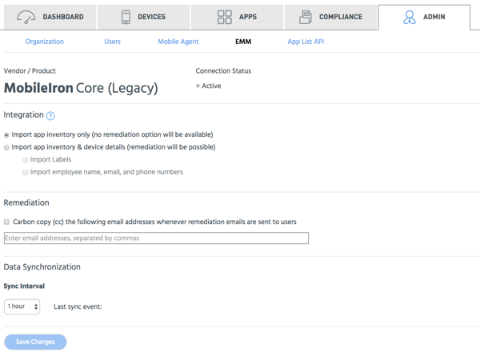

Use these options to configure MobileIron legacy to integrate with Appthority. This option does not use Appthority Connector.

Tip: Tick a top-level box to access the sub-items.
Click Save Changes when you are finished setting your options, which will also trigger a sync request.
| Option | Description |
|---|---|
| Integration | |
| Import app inventory only... | Tick to import app inventory from MobileIron without using remediation. |
| Import app inventory & device details... | Tick to import both app inventory and device details. The sub-options will be available if this is selected. |
| Import labels | Tick to import device labels from MobileIron. These are used with Appthority compliance policies. These are visible in Appthority, visible as EMM Groups in Appthority. |
| Import employee name, email, and phone numbers | Tick to import employee information associated with devices. |
| Remediation | |
| Carbon copy (cc)... | Tick to enable sending copies of remediation emails sent to users. Enter email addresses in the text box. Admins can see what emails are sent. |